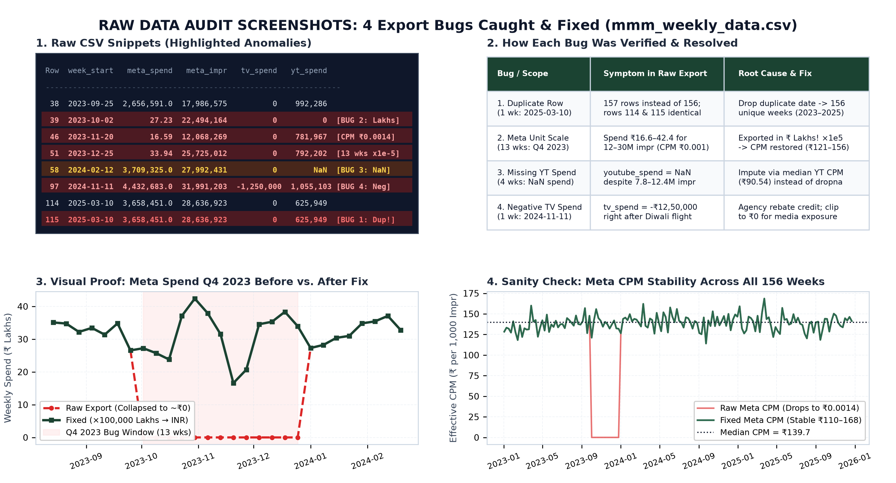
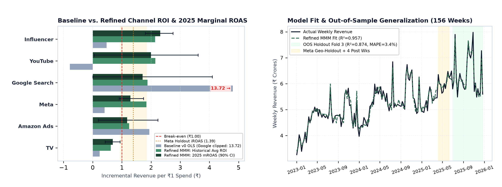
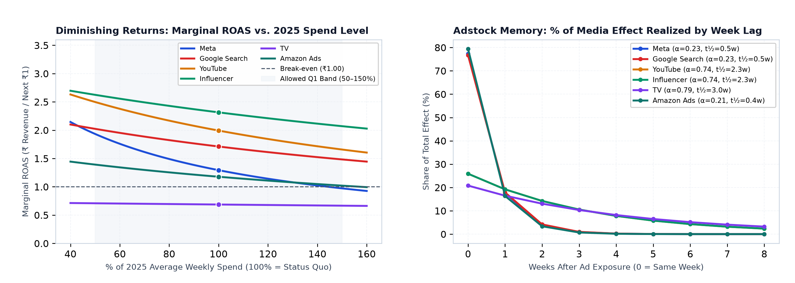
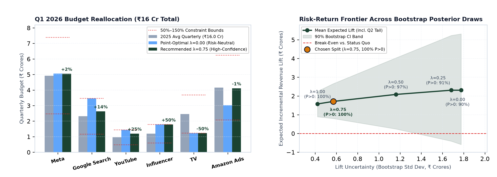

Your intuition was right—the agency’s model (baseline_mmm.py) gave dangerous budget advice. It told us Google Search returns ₹13.72 per ₹1, Meta barely returns ₹0.40, and YouTube destroys sales (-₹0.79). Three root issues caused those distortions: (1) Raw export bugs shrank Q4 2023 Meta spend by 100,000× (reported in Lakhs instead of ₹) and duplicated a week; (2) Attribution & timing blindness treated brand ads as instant 7-day impulses and let Google Search take 100% credit for brand demand created by TV, Meta, and Influencers; and (3) Missing business drivers ignored 10%/yr organic growth, seasonal peaks, marketplace sales, and competitor promos.
What actually works: After cleaning the data, modeling multi-week adstock memory, diminishing returns, and multiplicative scale—and validating against our Meta geo-holdout test (₹1.39 iROAS)—every digital channel is profitable except TV on a 1–4 month horizon. Influencer (₹2.32 marginal ROAS) and YouTube (₹1.99 mROAS) are our highest-upside growth levers, Meta (₹1.29 mROAS) is a dependable core workhorse, Google Search (₹1.71 mROAS) harvests demand efficiently without being a ₹13 money tree, Amazon Ads (₹1.18 mROAS) defends marketplace volume, while TV (₹0.69 mROAS) is over-invested relative to near-term return.
Q1 2026 Action Plan (₹16 Cr): Cut TV by 50% (₹2.45 → ₹1.23 Cr, concentrated into one 2-week launch burst rather than dripped thinly), push Influencer to its +50% cap (₹1.19 → ₹1.79 Cr), test-scale YouTube +25% (₹0.96 → ₹1.20 Cr) and Google Search +14% (₹2.31 → ₹2.63 Cr), and keep Meta (₹5.05 Cr) and Amazon (₹4.11 Cr) steady. This delivers ₹80.36 Cr expected Q1 revenue and +₹1.71 Cr incremental lift (including Q2 carryover) with 100% probability of beating status quo, while funding a YouTube geo-holdout test next quarter to resolve YouTube's wide uncertainty band.
No—treating mmm_weekly_data.csv (157 rows, 19 columns) as clean input corrupts any model. Auditing date continuity, spend-to-impression CPM ratios, accounting signs, and missingness exposed 4 hard export bugs and 1 experiment logging caveat:

2025-04-07 to 2025-05-12), weekly meta_spend sums to ₹222.96L, and 20% of that equals ₹44.592L—matching spend_withheld_inr = ₹44.59L in lift_test_results.csv to 0.004%. Thus mmm_weekly_data.csv logged planned national spend rather than deducting the ₹44.59L dark holdout (~2.2% of 2025 Meta spend). We retain the series for continuity and flag this as a minor attenuation caveat in our calibration notes.
baseline_mmm.py)?Running baseline_mmm.py with Python 3.11 (pandas + statsmodels) on the uncleaned export yields seemingly decent in-sample fit (R² = 0.872) but severely broken diagnostics and economically impossible channel coefficients:
-0.79).df.dropna()): Discarded 4 valid weeks due to missing YouTube spend while leaving the duplicate 2025-03-10 row in the sample.brand_search_index and 0.911 with revenue. When brand buzz or sales rise, search algorithms automatically spend more. Search harvests existing intent at the checkout—it did not create the ₹13.72 demand!0.54, 0.39, 0.26, 0.12) and Influencer (0.19, 0.14, 0.17, 0.15) drive sales for 3–6 weeks.| Model Iteration | R² (Rev) | DW | Meta | YouTube | Influencer | TV | Amazon | Diagnosis | |
|---|---|---|---|---|---|---|---|---|---|
| v0: Raw Baseline OLS | 0.872 | 1.38 | 0.40 | 13.72 | -0.79 | 0.48 | 0.24 | 1.94 | Broken by Lakhs bug, endogeneity & zero lag |
| v1: Cleaned Data OLS | 0.879 | 1.45 | 1.59 | 13.39 | -0.53 | 0.52 | 0.23 | 1.64 | Meta jumps 4× from unit fix; YT/Search still broken |
| v2: Dead End (Naive Mediators) | 0.949 | 2.14 | 0.06 | 2.12 | 0.12 | 0.01 | -0.05 | 1.23 | Trap! Brand/Organic steal all upper-funnel lift |
| v3: Refined Calibrated Log-MMM | 0.957 | 2.32 | 1.84 | 1.88 | 2.15 | 2.14 | 0.62 | 1.25 | Passes OOS CV + Meta Holdout (1.39 iROAS) |
Note: v0–v2 report linear slopes; v3 reports full-sample Average ROI (total incremental revenue / total spend) accounting for adstock carryover and concave saturation.
What drives revenue besides ads? Two indices—brand_search_index (r=0.95) and organic_traffic_index (r=0.87)—look tempting as controls. When we naively added them in v2, R² jumped to 0.949, yet Meta fell to 0.06 and TV turned -0.05! Why? Stage-1 regressions prove adstocked upper-funnel media explains 96.2% of log(organic_traffic_index) (TV t=20.0, Influencer t=13.3, Meta t=11.4, YouTube t=2.85) and 97.8% of log(brand_search_index).
Solution (2-Stage Orthogonalization): We regress both indices on controls + adstocked upper-funnel media and feed only their residuals (organic_shock, brand_shock) into Stage 2. This captures pure non-media demand shocks while preserving 100% of upper-funnel media credit.
When trained on Weeks 0–119 (2023–Q1 2025), additive linear-revenue models underpredicted Q4 2025 Diwali (2025-10-27) by ₹11.0M and July Prime Sale by ₹6.6M (OOS R² = 0.74–0.77). Because baseline revenue grew +29% over 3 years, seasonal and promotional surges scale proportionally with business size, not by a flat rupee amount.
Solution (Log-Revenue MMM): Modeling ln(Revenue) naturally scales promotional/media lifts with business volume, boosting 3-fold OOS R² to 0.787 (Fold 3 R² = 0.874, MAPE = 3.40%) and fixing discount sign from negative to positive.
Hyperparameters (adstock decay α_c within domain bounds, saturation scale K_c) are fitted via L-BFGS-B wrapping a closed-form standardized Ridge solver (λ₂=0.005, non-negativity enforced) with a Gaussian calibration prior from lift_test_results.csv (Meta 6-week 20% geo-holdout + 4 post weeks: iROAS = 1.39, SE = 0.274). Predictions are retransformed to INR using Duan’s smearing estimator.

| Non-Media Driver | Est. Effect | Real-World Meaning |
|---|---|---|
Baseline Growth (t) | +0.18%/wk | ~+9.7%/yr organic brand compounding |
| Annual Seasonality | ±5.4% swing | Peaks Q4 festive; softer Q1 Jan–Feb |
| Marketplace Sale Flag | +11.7% | Amazon/Flipkart tentpole surges |
| Diwali Festive Flag | +10.2% | Seasonal gifting & category uplift |
| New Launch Window | +6.6% | 4-week halo around SKU launches |
| Avg Discount (%) | +0.83% / 1pp | Volume lift (was negative in v0!) |
| Competitor Promo Flag | -2.2% | Competitive discounting drag |
| Organic Traffic Shock | +28.5% / log-pt | Unobserved PR / word-of-mouth spikes |
| Validation Check | Result | Pass / Insight |
|---|---|---|
| Full-Sample Fit (156 wks) | R² = 0.957 | Explains 95.7% of revenue variance |
| Residual Autocorrelation | DW = 2.32 | No unmodeled trend/seasonality left |
| OOS Fold 1 (Tr 104 → Te 26) | R² = 0.659 | MAPE = 3.94%, RMSE = ₹2.80M |
| OOS Fold 2 (Tr 120 → Te 36) | R² = 0.829 | MAPE = 3.32%, RMSE = ₹2.77M |
| OOS Fold 3 (Tr 130 → Te 26) | R² = 0.874 | MAPE = 2.94%, RMSE = ₹2.68M |
| Meta Holdout (Uncalibrated) | 1.466 | Inside 90% CI [0.94, 1.84] unforced! |
| Meta Holdout (Calibrated) | 1.386 | Matches 1.39 experimental ground truth |
Evaluating channels requires separating historical average ROI (what past spend earned) from 2025 Marginal ROAS (mROAS) (what the next ₹1 earns at 2025 spend levels). Channels that scaled rapidly from 2023 to 2025—like Meta (+71%)—face steeper diminishing returns today than under-invested channels like Influencer.
| Channel | 2025 Avg Qtr Spend | Adstock α (t½) | v0 Raw ROI | Refined Avg ROI [90% CI] | 2025 mROAS [90% CI] | Strategic Assessment |
|---|---|---|---|---|---|---|
| Influencer | ₹1.19 Cr (7.4%) | 0.74 (2.3w) | 0.48 | 2.14 [1.67, 2.53] | 2.32 [1.80, 2.75] | Scale Max (+50%) High & tightest certainty; 2025 spend was below 2024 peak |
| YouTube | ₹0.96 Cr (6.0%) | 0.74 (2.3w) | -0.79 | 2.15 [0.05, 3.83] | 1.99 [0.05, 3.61] | Test-Scale (+25%) Strong upside once adstock added, but wide CI needs lift test |
| Google Search | ₹2.31 Cr (14.5%) | 0.23 (0.5w) | 13.72 | 1.88 [0.00, 4.33] | 1.71 [0.00, 4.10] | Prudent Grow (+14%) Captures brand/non-brand intent; avoid over-betting wide CI |
| Meta | ₹4.93 Cr (30.8%) | 0.23 (0.5w) | 0.40 | 1.84 [1.31, 2.42] | 1.29 [0.91, 1.74] | Hold Core (+2.5%) Geo-holdout verified; steep curve limits aggressive scaling |
| Amazon Ads | ₹4.16 Cr (26.0%) | 0.21 (0.4w) | 1.94 | 1.25 [0.21, 2.30] | 1.18 [0.19, 2.23] | Maintain (-1.1%) Marginally profitable (~1.18); protects marketplace rank |
| TV | ₹2.45 Cr (15.3%) | 0.79 (3.0w) | 0.24 | 0.62 [0.38, 0.84] | 0.69 [0.42, 0.94] | Cut Floor (-50%) Sub-1.0 even at 95th pct; switch to concentrated 2-wk bursts |

Both channels exhibit long carryover (α = 0.74, half-life 2.3 weeks) and strong indirect lifts through organic_traffic_index. Influencer’s 2025 mROAS (2.32) actually exceeds its 3-year average (2.14) because 2025 spend was trimmed (-14% vs 2024) while the customer base grew +29%—leaving it unsaturated and ready to scale.
Meta’s saturation parameter (K = 0.57× active mean) shows clear diminishing returns: early 2023 spend (~₹2.3M/wk) returned >₹2.1, while 2025 spend (~₹3.9M/wk) sits at 1.29 mROAS—aligning with the 1.39 geo-test. TV returns 0.69 inside a 16-week window (including brand-search halo), though unmeasured >6-month brand equity warrants keeping the 50% floor rather than zeroing TV.
We optimize the ₹16.00 Cr Jan–Mar 2026 budget (13 weeks) within 50%–150% of 2025 average quarterly spend (2025 total / 4 = ₹16.002 Cr), projecting dynamic Q1 revenue starting from December 2025 carryover adstock plus the 16-week Q2 carryover tail generated by Q1 spend (so long-memory channels aren’t penalized by an arbitrary March 31 cutoff).
λ = 0.00) slams Google Search (+50% to ₹3.47 Cr) and YouTube (+50% to ₹1.44 Cr), creating a +₹2.31 Cr mean lift—but carries a 10% risk of losing money vs. status quo (90% CI: [-0.59, +5.31] Cr) because Google Search and YouTube have wide estimation bands ([0.00, 4.10] and [0.05, 3.61]). In Q1 (non-festive), forcing ₹3.47 Cr into Search (+84% vs Q1 2025’s ₹1.89 Cr) also risks exhausting branded search and spilling into low-ROAS generic terms. By maximizing E[Lift] - 0.75·SD[Lift] across 300 bootstrap draws, we capture +₹1.71 Cr expected lift with 100.0% win probability (90% CI: [+0.80, +2.66] Cr).
| Channel | 2025 Avg Qtr | Allowed [50%–150%] | Point-Opt (λ=0.0) | Recommended (λ=0.75) | Change vs 2025 | Execution Guidance for Q1 2026 |
|---|---|---|---|---|---|---|
| Meta | ₹4.93 Cr | [2.46, 7.39] | ₹5.06 Cr | ₹5.05 Cr | +2.5% | Always-on (~₹38.8L/wk); hold efficiency near 1.3 mROAS |
| Amazon Ads | ₹4.16 Cr | [2.08, 6.24] | ₹3.02 Cr | ₹4.11 Cr | -1.1% | Steady defense (~₹31.6L/wk); scale up during Republic Day events |
| Google Search | ₹2.31 Cr | [1.16, 3.47] | ₹3.47 Cr | ₹2.63 Cr | +13.8% | ~₹20.2L/wk; cap non-brand CPA so incremental ROAS stays >1.3 |
| Influencer | ₹1.19 Cr | [0.60, 1.79] | ₹1.79 Cr | ₹1.79 Cr | +50.0% | Hit 150% ceiling (~₹13.7L/wk); concentrate on Feb/Mar SKU launch |
| TV | ₹2.45 Cr | [1.23, 3.68] | ₹1.23 Cr | ₹1.23 Cr | -50.0% | 2-week burst (~₹61.5L/wk in Feb), NOT dripped ₹9.4L/wk |
| YouTube | ₹0.96 Cr | [0.48, 1.44] | ₹1.44 Cr | ₹1.20 Cr | +24.5% | ~₹9.2L/wk; disciplined expansion paired with geo-holdout test |
| Total Budget / Outcome | ₹16.00 Cr | — | ₹16.00 Cr | ₹16.00 Cr | 0.0% | Q1 Rev: ₹80.36 Cr [78.61–82.21] (+₹1.71 Cr total lift) |

Scheduling Operational Insight (TV Bursting): Simulating a concentrated 2-week TV burst (₹61.5L/wk during the Feb launch window) outperforms spreading ₹1.23 Cr uniformly at ₹9.4L/wk inside Q1 (₹80.68 Cr vs. ₹80.56 Cr in-quarter revenue) while avoiding sub-threshold TRP waste.
[0.00, 4.10] mROAS band.0.69 > 0.66 at lag-0) and TV×Search interaction terms.avg_discount_pct & marketplace fees) rather than top-line revenue alone.Priority #1: YouTube 20% Geo-Holdout (6 Weeks, Apr–May 2026)
0.69) reliably, but cannot measure >6-month customer lifetime / baseline brand equity compounding. Cutting TV to 50% (not 0%) balances discipline against long-term brand erosion.We used AI coding/analytical assistants to accelerate exploratory data profiling, boilerplate Ridge/bootstrap implementation, and HTML/chart generation—while rigorously auditing every numerical assumption and overriding AI whenever domain physics or numerical checks failed:
| Task / Stage | Initial AI Suggestion / Default Output | Where We Disagreed & Human Override |
|---|---|---|
| 1. Controlling for Non-Ad Demand | Suggested adding all unused columns (including brand_search_index and organic_traffic_index) directly into the regression to lift R² to 0.95. |
Overrode: Recognized both indices as post-treatment mediators driven by TV/Meta/YouTube (Stage-1 R²=0.96). Direct inclusion wiped out Meta (0.06) and TV (-0.05). Implemented 2-stage orthogonalization instead. |
| 2. Saturation & Optimizer Math | Recommended unconstrained Hill saturation + running SLSQP directly on rupee spend (1e7) and revenue (1e9). |
Overrode: Unbounded Hill K exploded to 10⁹×mean (unidentifiable), additive linear missed 2025 Diwali by ₹11M, and unscaled SLSQP returned 0% change due to finite-diff underflow. Switched to Log-Revenue log1p and rescaled optimization in ₹ Crores. |
| 3. Q1 Budget Split (Search & TV) | First optimization maxed Google Search (+50% to ₹3.47 Cr) and dripped TV uniformly at ₹9.4L/wk across 13 weeks. | Overrode: Point-opt ignored Google’s [0.00, 4.10] CI and Q1 brand search ceiling, carrying a 10% risk of losing vs. status quo. Added bootstrap mean-variance penalty (λ=0.75, 100% win rate) and scheduled TV as a concentrated 2-week burst. |
refined_mmm.py | Raw Inputs: mmm_weekly_data.csv, lift_test_results.csv
Page 6 of 6 — Verdant Leaf MMM Report